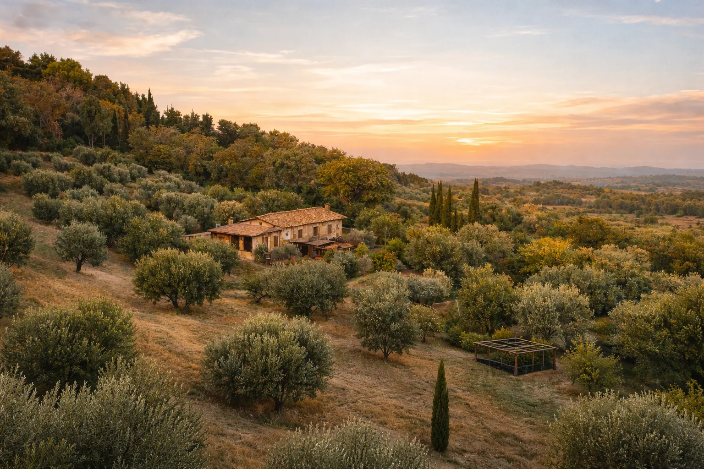
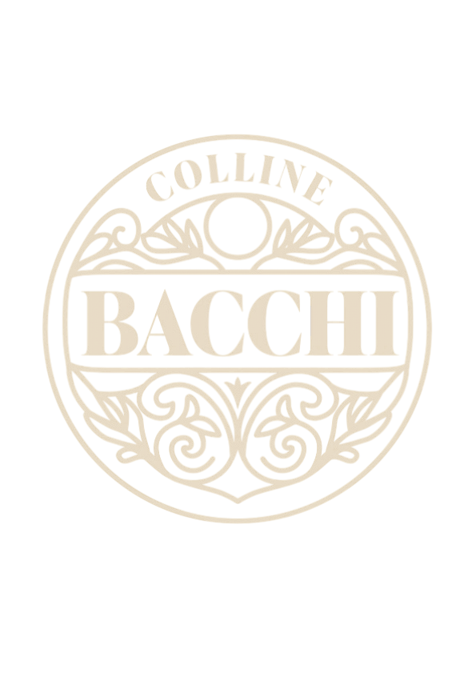
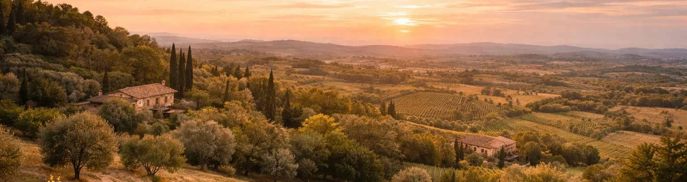

Produzione di olio extravergine di oliva e prodotti biologici coltivati nel rispetto della biodiversità territoriale marchigiana.
Scopri la tradizione e la passione della nostra azienda.
I nostri frutteti ed uliveti nel cuore delle Marche.
Frutta di stagione e prodotti tipici della nostra terra.

Prenota una visita e scopri le meraviglie della nostra terra.